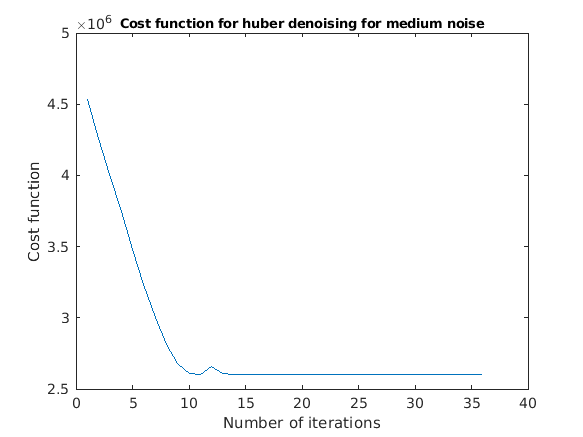

close all;
clear all;
noiseless = double(imread("mri_image_noiseless.png"));
figure();
myNumOfColors = 200;
myColorScale = [ [0:1/(myNumOfColors-1):1]' , [0:1/(myNumOfColors-1):1]' , [0:1/(myNumOfColors-1):1]' ];
imagesc (single (noiseless));
colormap (myColorScale);
title('Noiseless image','FontSize',8);
daspect ([1 1 1]);
axis tight;
colorbar;
Y = double(imread("mri_image_noise_level_low.png"));
rlow = rrmse(noiseless,Y);
figure();
myNumOfColors = 200;
myColorScale = [ [0:1/(myNumOfColors-1):1]' , [0:1/(myNumOfColors-1):1]' , [0:1/(myNumOfColors-1):1]' ];
imagesc (single (Y));
colormap (myColorScale);
title('Low Noise Image','FontSize',8);
daspect ([1 1 1]);
axis tight;
colorbar;
[X, funcvals] = graddesc(Y,@quadratic,0.06,1);
rlowquad = rrmse(X,noiseless);
figure(); plot(funcvals);
title('Cost function for quadratic denoising for low noise','FontSize', 9);
xlabel('Number of iterations'); ylabel('Cost function');
figure();
myNumOfColors = 200;
myColorScale = [ [0:1/(myNumOfColors-1):1]' , [0:1/(myNumOfColors-1):1]' , [0:1/(myNumOfColors-1):1]' ];
imagesc (single (X));
colormap (myColorScale);
title('Denoised image for low noise using quadratic penalty','FontSize',8);
daspect ([1 1 1]);
axis tight;
colorbar;
[X, funcvals] = graddesc(Y,@quadratic,0.06*0.8,1);
rlowquad08 = rrmse(X,noiseless);
[X, funcvals] = graddesc(Y,@quadratic,0.06*1.2,1);
rlowquad12 = rrmse(X,noiseless);
[X, funcvals] = graddesc(Y,@huber,0.7,1.5);
rlowhuber = rrmse(X,noiseless);
[X, funcvals] = graddesc(Y,@quadratic,0.06,1);
rlowquad = rrmse(X,noiseless);
figure(); plot(funcvals);
title('Cost function for Huber denoising for low noise','FontSize', 9);
xlabel('Number of iterations'); ylabel('Cost function');
figure();
myNumOfColors = 200;
myColorScale = [ [0:1/(myNumOfColors-1):1]' , [0:1/(myNumOfColors-1):1]' , [0:1/(myNumOfColors-1):1]' ];
imagesc (single (X));
colormap (myColorScale);
title('Denoised image for low noise using huber penalty','FontSize',8);
daspect ([1 1 1]);
axis tight;
colorbar;
[X, funcvals] = graddesc(Y,@quadratic,0.7*0.8,1.5);
rlowhuber0810 = rrmse(X,noiseless);
[X, funcvals] = graddesc(Y,@quadratic,0.7*1.2,1.5);
rlowhuber1210 = rrmse(X,noiseless);
[X, funcvals] = graddesc(Y,@quadratic,0.7,1.5*0.8);
rlowhuber1008 = rrmse(X,noiseless);
[X, funcvals] = graddesc(Y,@quadratic,0.7,1.2*1.5);
rlowhuber1012 = rrmse(X,noiseless);
[X, funcvals] = graddesc(Y,@thirdfunc,0.86,0.6);
rlowthird = rrmse(X,noiseless);
figure(); plot(funcvals);
title('Cost function for third denoising for low noise','FontSize', 9);
xlabel('Number of iterations'); ylabel('Cost function');
figure();
myNumOfColors = 200;
myColorScale = [ [0:1/(myNumOfColors-1):1]' , [0:1/(myNumOfColors-1):1]' , [0:1/(myNumOfColors-1):1]' ];
imagesc (single (X));
colormap (myColorScale);
title('Denoised image for low noise using third penalty','FontSize',8);
daspect ([1 1 1]);
axis tight;
colorbar;
[X, funcvals] = graddesc(Y,@thirdfunc,0.86*0.8,0.6);
rlowthird0810 = rrmse(X,noiseless);
[X, funcvals] = graddesc(Y,@thirdfunc,0.86*1.2,0.6);
rlowthird1210 = rrmse(X,noiseless);
[X, funcvals] = graddesc(Y,@thirdfunc,0.86,0.6*0.8);
rlowthird1008 = rrmse(X,noiseless);
[X, funcvals] = graddesc(Y,@thirdfunc,0.86,0.6*1.2);
rlowthird1012 = rrmse(X,noiseless);
figure();
myNumOfColors = 200;
myColorScale = [ [0:1/(myNumOfColors-1):1]' , [0:1/(myNumOfColors-1):1]' , [0:1/(myNumOfColors-1):1]' ];
imagesc (single (noiseless));
colormap (myColorScale);
title('Noiseless image','FontSize',8);
daspect ([1 1 1]);
axis tight;
colorbar;
Y = double(imread("mri_image_noise_level_medium.png"));
rmed = rrmse(noiseless,Y);
figure();
myNumOfColors = 200;
myColorScale = [ [0:1/(myNumOfColors-1):1]' , [0:1/(myNumOfColors-1):1]' , [0:1/(myNumOfColors-1):1]' ];
imagesc (single (Y));
colormap (myColorScale);
title('Medium Noise Image','FontSize',8);
daspect ([1 1 1]);
axis tight;
colorbar;
[X, funcvals] = graddesc(Y,@quadratic,0.11,1);
rmedquad = rrmse(noiseless,X);
figure(); plot(funcvals);
title('Cost function for quadratic denoising for medium noise','FontSize', 9);
xlabel('Number of iterations'); ylabel('Cost function');
figure();
myNumOfColors = 200;
myColorScale = [ [0:1/(myNumOfColors-1):1]' , [0:1/(myNumOfColors-1):1]' , [0:1/(myNumOfColors-1):1]' ];
imagesc (single (X));
colormap (myColorScale);
title('Denoised image for medium noise using quadratic penalty','FontSize',8);
daspect ([1 1 1]);
axis tight;
colorbar;
[X, funcvals] = graddesc(Y,@quadratic,0.11*0.8,1);
rmedquad08 = rrmse(noiseless,X);
[X, funcvals] = graddesc(Y,@quadratic,0.11*1.2,1);
rmedquad12 = rrmse(noiseless,X);
[X, funcvals] = graddesc(Y,@huber,0.75,3.2);
rmedhuber = rrmse(noiseless,X);
figure(); plot(funcvals);
title('Cost function for huber denoising for medium noise','FontSize', 9);
xlabel('Number of iterations'); ylabel('Cost function');
figure();
myNumOfColors = 200;
myColorScale = [ [0:1/(myNumOfColors-1):1]' , [0:1/(myNumOfColors-1):1]' , [0:1/(myNumOfColors-1):1]' ];
imagesc (single (X));
colormap (myColorScale);
title('Denoised image for medium noise using huber penalty','FontSize',8);
daspect ([1 1 1]);
axis tight;
colorbar;
[X, funcvals] = graddesc(Y,@huber,0.75*0.8,3.2);
rmedhuber0810 = rrmse(noiseless,X);
[X, funcvals] = graddesc(Y,@huber,0.75*1.2,3.2);
rmedhuber1210 = rrmse(noiseless,X);
[X, funcvals] = graddesc(Y,@huber,0.75,3.2*0.8);
rmedhuber1008 = rrmse(noiseless,X);
[X, funcvals] = graddesc(Y,@huber,0.75,3.2*1.2);
rmedhuber1012 = rrmse(noiseless,X);
[X, funcvals] = graddesc(Y,@thirdfunc,0.7,5);
rmedthird = rrmse(noiseless,X);
figure(); plot(funcvals);
title('Cost function for third denoising for medium noise','FontSize', 9);
xlabel('Number of iterations'); ylabel('Cost function');
figure();
myNumOfColors = 200;
myColorScale = [ [0:1/(myNumOfColors-1):1]' , [0:1/(myNumOfColors-1):1]' , [0:1/(myNumOfColors-1):1]' ];
imagesc (single (X));
colormap (myColorScale);
title('Denoised image for medium noise using third penalty','FontSize',8);
daspect ([1 1 1]);
axis tight;
colorbar;
[X, funcvals] = graddesc(Y,@thirdfunc,0.7*0.8,5);
rmedthird0810 = rrmse(noiseless,X);
[X, funcvals] = graddesc(Y,@thirdfunc,0.7*1.2,5);
rmedthird1210 = rrmse(noiseless,X);
[X, funcvals] = graddesc(Y,@thirdfunc,0.7,5*0.8);
rmedthird1008 = rrmse(noiseless,X);
[X, funcvals] = graddesc(Y,@thirdfunc,0.7,5*1.2);
rmedthird1012 = rrmse(noiseless,X);
figure();
myNumOfColors = 200;
myColorScale = [ [0:1/(myNumOfColors-1):1]' , [0:1/(myNumOfColors-1):1]' , [0:1/(myNumOfColors-1):1]' ];
imagesc (single (noiseless));
colormap (myColorScale);
title('Noiseless image','FontSize',9);
daspect ([1 1 1]);
axis tight;
colorbar;
Y = double(imread("mri_image_noise_level_high.png"));
rhigh = rrmse(Y,noiseless);
figure();
myNumOfColors = 200;
myColorScale = [ [0:1/(myNumOfColors-1):1]' , [0:1/(myNumOfColors-1):1]' , [0:1/(myNumOfColors-1):1]' ];
imagesc (single (Y));
colormap (myColorScale);
title('High Noise Image','FontSize',8);
daspect ([1 1 1]);
axis tight;
colorbar;
[X, funcvals] = graddesc(Y,@quadratic,0.305,1);
rhighquad = rrmse(X,noiseless);
figure(); plot(funcvals);
title('Cost function for quadratic denoising for high noise','FontSize', 9);
xlabel('Number of iterations'); ylabel('Cost function');
figure();
myNumOfColors = 200;
myColorScale = [ [0:1/(myNumOfColors-1):1]' , [0:1/(myNumOfColors-1):1]' , [0:1/(myNumOfColors-1):1]' ];
imagesc (single (X));
colormap (myColorScale);
title('Denoised image for high noise using quadratic penalty','FontSize',8);
daspect ([1 1 1]);
axis tight;
colorbar;
[X, funcvals] = graddesc(Y,@quadratic,0.305*0.8,1);
rhighquad08 = rrmse(X,noiseless);
[X, funcvals] = graddesc(Y,@quadratic,0.305*1.2,1);
rhighquad12 = rrmse(X,noiseless);
[X, funcvals] = graddesc(Y,@huber,0.775,3.5);
rhighhuber = rrmse(X,noiseless);
figure(); plot(funcvals);
title('Cost function for huber denoising for high noise','FontSize', 9);
xlabel('Number of iterations'); ylabel('Cost function');
figure();
myNumOfColors = 200;
myColorScale = [ [0:1/(myNumOfColors-1):1]' , [0:1/(myNumOfColors-1):1]' , [0:1/(myNumOfColors-1):1]' ];
imagesc (single (X));
colormap (myColorScale);
title('Denoised image for high noise using huber penalty','FontSize',8);
daspect ([1 1 1]);
axis tight;
colorbar;
[X, funcvals] = graddesc(Y,@huber,0.775*0.8,3.5);
rhighhuber0810 = rrmse(X,noiseless);
[X, funcvals] = graddesc(Y,@huber,0.775*1.2,3.5);
rhighhuber1210 = rrmse(X,noiseless);
[X, funcvals] = graddesc(Y,@huber,0.775,3.5*0.8);
rhighhuber1008 = rrmse(X,noiseless);
[X, funcvals] = graddesc(Y,@huber,0.775,3.5*1.2);
rhighhuber1012 = rrmse(X,noiseless);
[X, funcvals] = graddesc(Y,@thirdfunc,0.87,2.1);
rhighthird = rrmse(X,noiseless);
figure(); plot(funcvals);
title('Cost function for third denoising for high noise','FontSize', 9);
xlabel('Number of iterations'); ylabel('Cost function');
figure();
myNumOfColors = 200;
myColorScale = [ [0:1/(myNumOfColors-1):1]' , [0:1/(myNumOfColors-1):1]' , [0:1/(myNumOfColors-1):1]' ];
imagesc (single (X));
colormap (myColorScale);
title('Denoised image for high noise using third penalty','FontSize',8);
daspect ([1 1 1]);
axis tight;
colorbar;
[X, funcvals] = graddesc(Y,@thirdfunc,0.87*0.8,2.1);
rhighthird0810 = rrmse(X,noiseless);
[X, funcvals] = graddesc(Y,@thirdfunc,0.87*1.2,2.1);
rhighthird1210 = rrmse(X,noiseless);
[X, funcvals] = graddesc(Y,@thirdfunc,0.87,2.1*0.8);
rhighthird1008 = rrmse(X,noiseless);
[X, funcvals] = graddesc(Y,@thirdfunc,0.87,2.1*1.2);
rhighthird1012 = rrmse(X,noiseless);
rs = [rlow,rlowquad,rlowhuber,rlowthird;
rmed,rmedquad,rmedhuber,rmedthird;
rhigh,rhighquad,rhighhuber,rhighthird];
fprintf('\n \n \n Denoising Low noise Using Quadratic Prior');
fprintf(strcat('\n Optimal Alpha = ',num2str(0.06)));
fprintf(strcat('\n RRMSE(alpha) = ',num2str(rlowquad)));
fprintf(strcat('\n RRMSE(alpha*0.8) = ', num2str(rlowquad08)));
fprintf(strcat('\n RRMSE(alpha*1.2) = ', num2str(rlowquad12)));
fprintf('\n \n Denoising Medium noise Using Quadratic Prior');
fprintf(strcat('\n Optimal Alpha = ',num2str(0.11)));
fprintf(strcat('\n RRMSE(alpha) = ',num2str(rmedquad)));
fprintf(strcat('\n RRMSE(alpha*0.8) = ', num2str(rmedquad08)));
fprintf(strcat('\n RRMSE(alpha*1.2) = ', num2str(rmedquad12)));
fprintf('\n \n Denoising High noise Using Quadratic Prior');
fprintf(strcat('\n Optimal Alpha = ',num2str(0.305)));
fprintf(strcat('\n RRMSE(alpha) = ',num2str(rhighquad)));
fprintf(strcat('\n RRMSE(alpha*0.8) = ', num2str(rhighquad08)));
fprintf(strcat('\n RRMSE(alpha*1.2) = ', num2str(rhighquad12)));
fprintf('\n \n Denoising Low noise Using Huber Prior');
fprintf(strcat('\n Optimal Alpha = ',num2str(0.7)));
fprintf(strcat('\n Optimal Gamma = ',num2str(1.5)));
fprintf(strcat('\n RRMSE(alpha,Gamma) = ',num2str(rlowhuber)));
fprintf(strcat('\n RRMSE(alpha*0.8,Gamma) = ', num2str(rlowhuber0810)));
fprintf(strcat('\n RRMSE(alpha*1.2,Gamma) = ', num2str(rlowhuber1210)));
fprintf(strcat('\n RRMSE(alpha,0.8*Gamma) = ', num2str(rlowhuber1008)));
fprintf(strcat('\n RRMSE(alpha,1.2*Gamma) = ', num2str(rlowhuber1012)));
fprintf('\n \n Denoising Medium noise Using Huber Prior');
fprintf(strcat('\n Optimal Alpha = ',num2str(0.75)));
fprintf(strcat('\n Optimal Gamma = ',num2str(3.2)));
fprintf(strcat('\n RRMSE(alpha,Gamma) = ',num2str(rmedhuber)));
fprintf(strcat('\n RRMSE(alpha*0.8,Gamma) = ', num2str(rmedhuber0810)));
fprintf(strcat('\n RRMSE(alpha*1.2,Gamma) = ', num2str(rmedhuber1210)));
fprintf(strcat('\n RRMSE(alpha,0.8*Gamma) = ', num2str(rmedhuber1008)));
fprintf(strcat('\n RRMSE(alpha,1.2*Gamma) = ', num2str(rmedhuber1012)));
fprintf('\n \n Denoising High noise Using Huber Prior');
fprintf(strcat('\n Optimal Alpha = ',num2str(0.775)));
fprintf(strcat('\n Optimal Gamma = ',num2str(3.5)));
fprintf(strcat('\n RRMSE(alpha,Gamma) = ',num2str(rhighhuber)));
fprintf(strcat('\n RRMSE(alpha*0.8,Gamma) = ', num2str(rhighhuber0810)));
fprintf(strcat('\n RRMSE(alpha*1.2,Gamma) = ', num2str(rhighhuber1210)));
fprintf(strcat('\n RRMSE(alpha,0.8*Gamma) = ', num2str(rhighhuber1008)));
fprintf(strcat('\n RRMSE(alpha,1.2*Gamma) = ', num2str(rhighhuber1012)));
fprintf('\n \n Denoising Low noise Using Third Prior');
fprintf(strcat('\n Optimal Alpha = ',num2str(0.86)));
fprintf(strcat('\n Optimal Gamma = ',num2str(0.6)));
fprintf(strcat('\n RRMSE(alpha,Gamma) = ',num2str(rlowthird)));
fprintf(strcat('\n RRMSE(alpha*0.8,Gamma) = ', num2str(rlowthird0810)));
fprintf(strcat('\n RRMSE(alpha*1.2,Gamma) = ', num2str(rlowthird1210)));
fprintf(strcat('\n RRMSE(alpha,0.8*Gamma) = ', num2str(rlowthird1008)));
fprintf(strcat('\n RRMSE(alpha,1.2*Gamma) = ', num2str(rlowthird1012)));
fprintf('\n \n Denoising Medium noise Using Third Prior');
fprintf(strcat('\n Optimal Alpha = ',num2str(0.7)));
fprintf(strcat('\n Optimal Gamma = ',num2str(5)));
fprintf(strcat('\n RRMSE(alpha,Gamma) = ',num2str(rmedthird)));
fprintf(strcat('\n RRMSE(alpha*0.8,Gamma) = ', num2str(rmedthird0810)));
fprintf(strcat('\n RRMSE(alpha*1.2,Gamma) = ', num2str(rmedthird1210)));
fprintf(strcat('\n RRMSE(alpha,0.8*Gamma) = ', num2str(rmedthird1008)));
fprintf(strcat('\n RRMSE(alpha,1.2*Gamma) = ', num2str(rmedthird1012)));
fprintf('\n \n Denoising High noise Using Third Prior');
fprintf(strcat('\n Optimal Alpha = ',num2str(0.87)));
fprintf(strcat('\n Optimal Gamma = ',num2str(2.1)));
fprintf(strcat('\n RRMSE(alpha,Gamma) = ',num2str(rhighthird)));
fprintf(strcat('\n RRMSE(alpha*0.8,Gamma) = ', num2str(rhighthird0810)));
fprintf(strcat('\n RRMSE(alpha*1.2,Gamma) = ', num2str(rhighthird1210)));
fprintf(strcat('\n RRMSE(alpha,0.8*Gamma) = ', num2str(rhighthird1008)));
fprintf(strcat('\n RRMSE(alpha,1.2*Gamma) = ', num2str(rhighthird1012)));
Denoising Low noise Using Quadratic Prior
Optimal Alpha =0.06
RRMSE(alpha) =0.046009
RRMSE(alpha*0.8) =0.04603
RRMSE(alpha*1.2) =0.046458
Denoising Medium noise Using Quadratic Prior
Optimal Alpha =0.11
RRMSE(alpha) =0.1133
RRMSE(alpha*0.8) =0.11396
RRMSE(alpha*1.2) =0.11279
Denoising High noise Using Quadratic Prior
Optimal Alpha =0.305
RRMSE(alpha) =0.12856
RRMSE(alpha*0.8) =0.12819
RRMSE(alpha*1.2) =0.13078
Denoising Low noise Using Huber Prior
Optimal Alpha =0.7
Optimal Gamma =1.5
RRMSE(alpha,Gamma) =0.042854
RRMSE(alpha*0.8,Gamma) =0.12475
RRMSE(alpha*1.2,Gamma) =0.23033
RRMSE(alpha,0.8*Gamma) =0.16843
RRMSE(alpha,1.2*Gamma) =0.16843
Denoising Medium noise Using Huber Prior
Optimal Alpha =0.75
Optimal Gamma =3.2
RRMSE(alpha,Gamma) =0.11099
RRMSE(alpha*0.8,Gamma) =0.11186
RRMSE(alpha*1.2,Gamma) =0.14335
RRMSE(alpha,0.8*Gamma) =0.11074
RRMSE(alpha,1.2*Gamma) =0.11151
Denoising High noise Using Huber Prior
Optimal Alpha =0.775
Optimal Gamma =3.5
RRMSE(alpha,Gamma) =0.12662
RRMSE(alpha*0.8,Gamma) =0.12986
RRMSE(alpha*1.2,Gamma) =0.18619
RRMSE(alpha,0.8*Gamma) =0.12679
RRMSE(alpha,1.2*Gamma) =0.12699
Denoising Low noise Using Third Prior
Optimal Alpha =0.86
Optimal Gamma =0.6
RRMSE(alpha,Gamma) =0.042754
RRMSE(alpha*0.8,Gamma) =0.044432
RRMSE(alpha*1.2,Gamma) =0.062735
RRMSE(alpha,0.8*Gamma) =0.042758
RRMSE(alpha,1.2*Gamma) =0.042918
Denoising Medium noise Using Third Prior
Optimal Alpha =0.7
Optimal Gamma =5
RRMSE(alpha,Gamma) =0.11026
RRMSE(alpha*0.8,Gamma) =0.11147
RRMSE(alpha*1.2,Gamma) =0.11646
RRMSE(alpha,0.8*Gamma) =0.11034
RRMSE(alpha,1.2*Gamma) =0.11043
Denoising High noise Using Third Prior
Optimal Alpha =0.87
Optimal Gamma =2.1
RRMSE(alpha,Gamma) =0.12604
RRMSE(alpha*0.8,Gamma) =0.13267
RRMSE(alpha*1.2,Gamma) =0.15746
RRMSE(alpha,0.8*Gamma) =0.12621
RRMSE(alpha,1.2*Gamma) =0.12623
